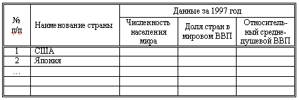

ЛАБОРАТОРНАЯ РАБОТА № WRD-03
РАБОТА С ТАБЛИЦАМИ В MS WORD. ЧАСТЬ 1
Теоретические сведения:
- Создание таблицы.
- Выделение элементов в
таблице.
- Добавление строк и столбцов
в таблицу. Удаление строк и
столбцов.
- Изменение ширины столбца
таблицы. Изменение высоты строки.
- Преобразование текста в
таблицу и таблицы в текст.
- Сортировка таблицы.
Задания:
- Загрузите документ W-03.doc. Сохраните его копию в своей
сетевой папке. Имя копии — Word-03.
- Для Таблицы 1:
- Добавьте слева от первого столбца еще один
столбец. Разместите в нем номера строк.
- Настройте ширину столбцов. Выровняйте ширины
столбцов с числовыми данными.
- Выровняйте наименования стран по левой стороне
ячейки.
- Продублируйте заголовки
столбцов на последующие страницы.
- Отсортируйте таблицу в алфавитном порядке
наименований стран.
- Настройте границы таблицы. Обрамление всей
таблицы, нижнюю границу заголовка столбцов,
правые границы первого и второго столбца
выполнить двойной линией; остальные границы -
одинарной линией.
- Создайте копию таблицы и
отсортируйте ее по значениям на 1997 г. в порядке
убывания.
- Для Таблицы 2:
- Преобразуйте текст в таблицу.
- Добавьте слева от первого столбца еще один
столбец. Разместите в нем номера строк.
- Настройте ширину столбцов. Выровняйте ширины
столбцов с числовыми данными.
- Выровняйте наименования стран по левой стороне
ячейки.
- Отсортируйте таблицу по значениям на 1997 г. в
порядке убывания.
- Настройте границы таблицы. Обрамление всей
таблицы, нижнюю границу заголовка столбцов,
правые границы первого и второго столбца
выполнить двойной линией; остальные границы -
одинарной линией.
- Для Таблицы 3:
- Добавьте слева от первого столбца еще один
столбец. Разместите в нем номера строк.
- Отсортируйте таблицу по значениям на 1997 г. в
порядке убывания.
- Удалите столбцы с данными за 1991-1996 годы. Удалите
3 последних строки.
- Выровняйте наименования стран по левой стороне
ячейки.
- Преобразуйте таблицу в текст. В качестве
разделителя выберите пробел.
- Создайте новую таблицу из пяти столбцов (см.
рисунок)

- В первом столбце разместите номера строк.
- Во второй столбец скопируйте названия стран.
- В оставшиеся столбцы скопируйте данные за 1997
год из таблиц 1, 2 и 3.
- Отсортируйте данные в афавитном порядке
названий стран.